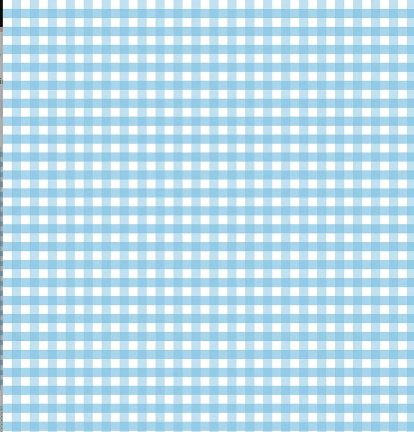

AI Kabsa is one of the national dishes of Saudi Arabia! This dish
is a well seasoned flavorful mixed rice dish with meat, vegetables
and different spices making the taste powerful and an immaculate dish.
This dish is normally made with different types of meat like, camel,
fish, or lamb. AI Kabsa is a dish that is usually eaten for lunch or
dinner and is shared with many people due the amount of
servings it has for multiple people. The correct and polite way of eating
this cuisine is by placing the rice on a large serving dish, topping
the dish with the chicken & garnished with almonds or any type of nuts.
Then, this dish is served with a fresh mixed salad.